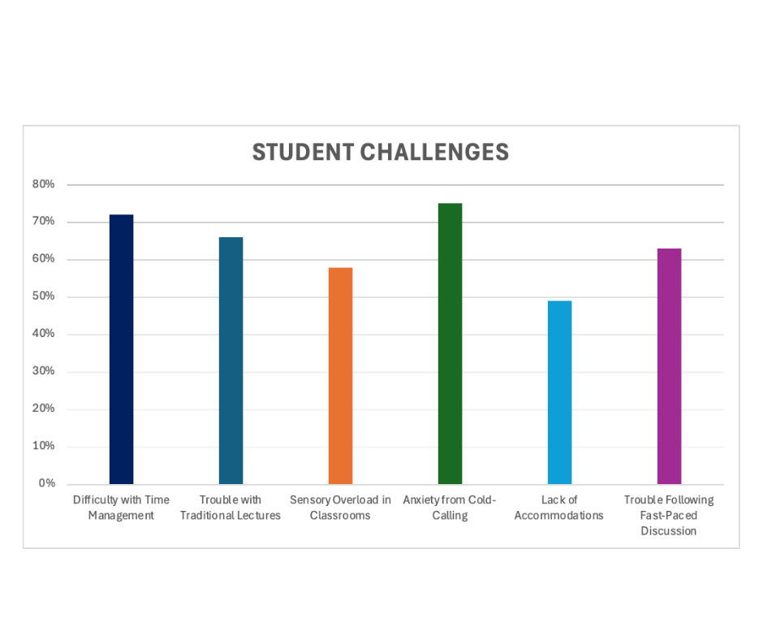

Understanding how to support neurodivergent learners is a critical part of inclusive education in law schools. Neurodivergent students may experience challenges and strengths related to attention, sensory processing, or executive functioning.
Teaching strategies should focus on flexibility, accessibility, and structured learning environments. This benefits all students, but especially those with ADHD, autism, dyslexia, or processing differences.
Supporting students may include visual learning aids, clear rubrics, flexible deadlines, and space for self-advocacy. Providing options for demonstrating understanding is essential.
Why It Matters
What You Can Do
Legal citations sometimes include footnotes like Smith v. Jones1. Additionally, chemical formulas like H2O are found in environmental law.
Inclusive Teaching Tips:
- Use visual aids
- Provide checklists
- Allow for movement breaks
Steps to Make Classrooms Inclusive:
- Learn about neurodiversity
- Audit your syllabus
- Apply universal design principles
Learn more at the Supporting Neurodivergent Students in the Classroom.
This bar chart shows data from a survey of neurodivergent law students. The most reported barrier is anxiety from cold-calling, reported by 75% of students. Time management challenges follow at 72%, and traditional lecture difficulties at 66%. Trouble with fast-paced discussion is 63%, while sensory overload affects 58%. Nearly half, 49%, report a lack of accommodations.
Comparison of Study Aids
| Tool | Strength | Best For |
|---|---|---|
| Flashcards | Repetition | Memory recall |
| Mind Maps | Visual overview | Big-picture thinkers |
| Voice Notes | Auditory support | Verbal processors |